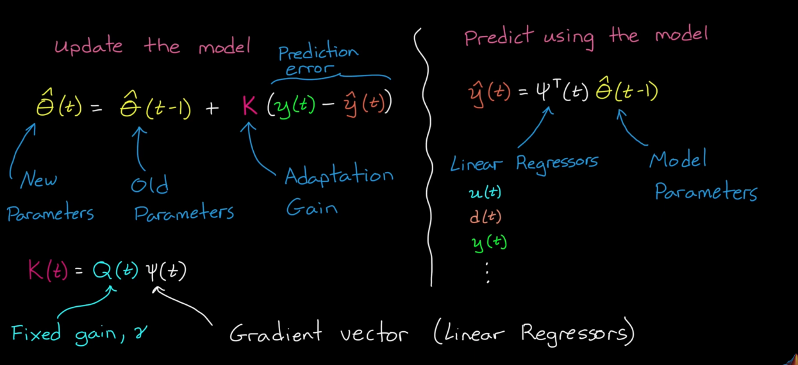

Scenario 1: You know a lot about the physical system -> white box approach: create model directly from first principles
Scenario 2: You don’t know much about the system -> black box approach: pure system ID
Scenario 3: You combine first principles with fitting ->grey box approach: use first principles to derive structure and fit parameters
Linear, Nonlinear, Online and Recursive system ID. System ID is a data driven method
Choose a model structure that represents the system dynamics and fit a model to the data by picking the parameters
Curve fit only describes the sequence of data but doesn’t describe the underlying mechanisms that created the data. For instance, curve fitting cannot predict the data if system was initialized at different state or even different inputs.
System ID takes into account of correlation between the data points, which depends on previous system state.

Residual:
…
We have a residual curve.
Residual Autocorrelation: If residual values are correlated with themselves in some way -> there is unmodeled dynamics in disturbance model.
Residual-Input Cross-Correlation: If residual values are highly cross-correlated with input -> there is unmodeled dynamics in system model.

An ARX system is a type of discrete-time, linear, time-invariant model used in system identification, where the output is modeled as an Auto-Regressive model with eXogenous input.
The system is described by a linear difference equation:
\[y(t) + a_1 y(t-1) + a_2 y(t-2) + \dots + a_{n_a} y(t-n_a) = b_1 u(t-1) + b_2 u(t-2) + \dots + b_{n_b} u(t-n_b) + e(t)\]Where:
In compact notation:
[ A(q^{-1})y(t) = B(q^{-1})u(t) + e(t) ]
where \(q^{-1}\) is the backward shift operator (\(q^{-1} y(t) = y(t-1)\)).
A NARX system is a Nonlinear Auto-Regressive model with eXogenous input.
It extends the ARX model by allowing nonlinear relationships between past inputs, past outputs, and the current output.
The general form is:
\[y(t) = F\big( y(t-1), y(t-2), \dots, y(t-n_a), \; u(t-1), u(t-2), \dots, u(t-n_b) \big) + e(t)\]Where:
Note each of the term may be multiplied by non-linear functions like Fourier-Series.
No guarantee of globall stability past captured data. We can approximate the bulk of the system with a linear model which we can analyze the stability of, and capture the remaining residuals with nonlinear terms.
The model is developed online over time, using data once it becomes available at each time step. This method is beneficial for time-varying systems.
Adaptive Control
Fault Detection
Only use part of the most recent past data with a fixed-length window. Online algorithms needs fast execution, so we only use linear models for now.
However, we need to store these data.
Every single data point is run recursively but not stored. Faster execution time.
Method 1: Pick a fixed gain K:

Method 2: Since fixed gain is not optimal enough:
Use Kalman!!!